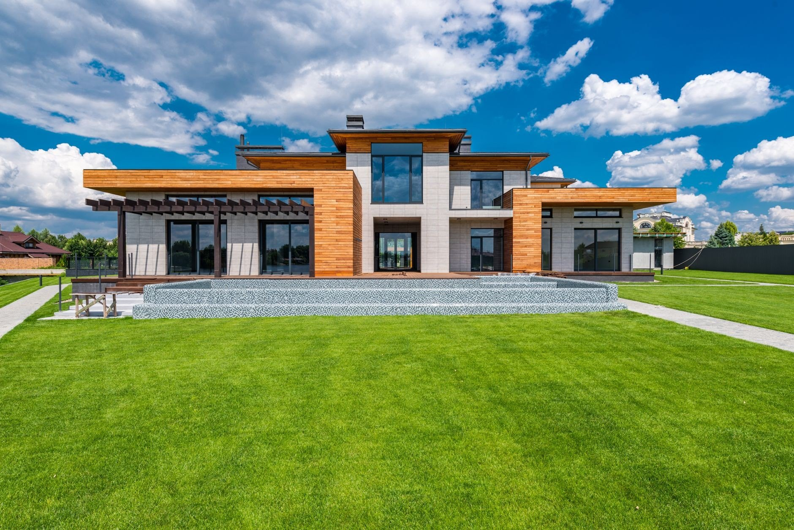

Stolarka i remonty
Montaż okien, drzwi i bram oraz remonty wnętrz. Pomiar i wycena na miejscu, w Krośniewicach, Kutnie i okolicy.

Okna, drzwi i bramy
Montujemy produkty Drutex i KMT. Wymiary bierzemy z własnego pomiaru, więc za dopasowanie odpowiada ta sama ekipa, która potem montuje.

Okna PVC i aluminiowe
Przewiewa przy ramie, a rachunki za ogrzewanie rosną? Montujemy okna Drutex z PVC i aluminium, dobrane pod konkretne pomieszczenia: cieplejsze pakiety od północy, cichsze szyby od ulicy. Stare okno wyjmujemy w całości, nowe osadzamy na ciepłym montażu, a ościeża poprawiamy od razu, bez szukania tynkarza.
Wycena okien →
Drzwi zewnętrzne i wewnętrzne
Drzwi wejściowe mają trzymać ciepło i wytrzymać próbę wyważenia. Montujemy drzwi stalowe KMT z ciepłym progiem, wypoziomowane tak, żeby domykały się bez trzaskania. W środku domu stawiamy drzwi pokojowe z ościeżnicą regulowaną, która kryje nierówności ściany.
Wycena drzwi →
Bramy garażowe, rolety i parapety
Stara brama uchylna hałasuje i wypuszcza ciepło z garażu? Montujemy ocieplane bramy garażowe KMT. Do okien dokładamy rolety, moskitiery i parapety, a przy nowych oknach skrzynki rolet chowamy w ociepleniu, żeby nie było ich widać z ulicy.
Wycena bramy →Domy, mieszkania i łazienki
Remont ustawiamy w kolejności, w której każda warstwa zdąży wyschnąć, zanim przykryje ją następna.

Remonty domów i mieszkań
Stary dom albo mieszkanie po rodzicach? Najpierw sprawdzamy, co siedzi w ścianach: instalacje, wilgoć, krzywe podłogi. Dopiero potem podajemy cenę. Prowadzimy remont od skucia starych tynków po ostatnią listwę i mówimy wprost, co spokojnie można zostawić.
Wycena remontu →
Łazienki od podstaw
Łazienka to najtrudniejsze pomieszczenie w domu i najczęstsze miejsce fuszerki. Skuwamy stare płytki do surowego muru, kładziemy hydroizolację, potem glazurę i biały montaż. Płytki i armaturę wybierasz Ty, kleje i chemię dobieramy my.
Wycena łazienki →
Gładzie, malowanie i podłogi
Ściany po wymianie okien albo po latach w starym domu? Wyrównujemy je gładzią, szlifujemy i malujemy, sufity poprawiamy razem z resztą. Na podłogi kładziemy panele, deski albo płytki, a listwy docinamy na miejscu.
Wycena wykończenia →Która z usług Cię interesuje?
Opisz, co chcesz zrobić. Odezwiemy się z terminem pomiaru i wyceną.
+48 605 376 180